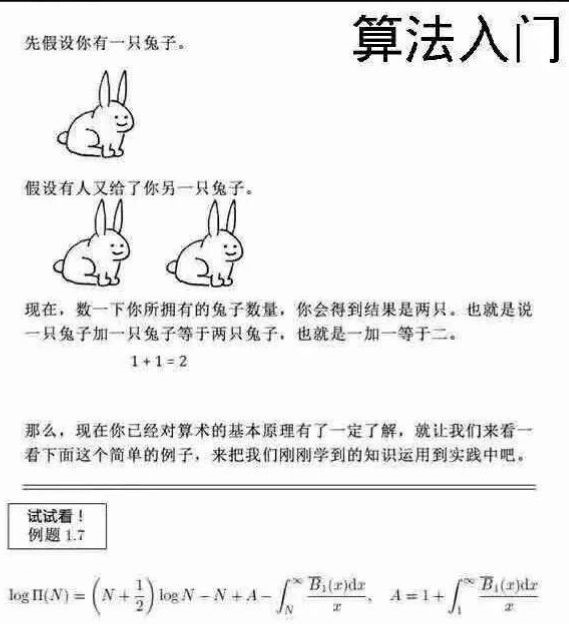

先假设你有 $k$ 只兔子！
假如你找到了一个整数 $𝑚$，使得存在一个整数 $𝑥$，让$𝑥 ∗ 𝑚 = 𝑘$，即认为 $𝑘$ 可以被 $𝑚$ 整除.也就是 $𝑘%𝑚 = 0$。 那么，现在你已经学会了整除，请看下面这个简单的例子，来把我们刚刚学到的知识运用到实践中吧！ 鸡尾酒给出一个长度为 $𝑛$ 的序列，你能否选出一个非空子序列，使得子序列之和能被特定的整数 $𝑚$ 整除？
第一行输入三个整数 $n,m,k。(m≤n≤10^{18},k≤2*10^5)$，代表鸡尾酒总共给出了 $n$ 个数字，需要选出一些数字使得这些数字之和能被 $m$ 整除。
接下来有 $k$ 行，每行两个整数 $a,b$，描述鸡尾酒给出的数字。$a_i,b_i$ 代表鸡尾酒给了 $b_i$ 个大小为 $a_i$ 数字。保证$b_1+b_2+...+b_k=n。(0≤ai≤10^{18})$。
如果可以找出一个方案满足要求，输出$"Yes"$，否则输出$"No"$。(不要输出引号)
5 3 2 5 1 4 4
Yes
 Comet OJ
Comet OJ